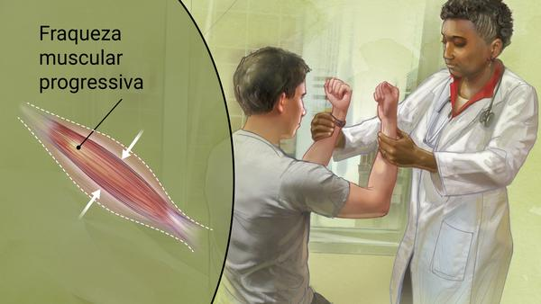

O que poderia ser feito para ajudar Stephen Hawking nos dias atuais?
Stephen Hawking faleceu em 2018, vamos listar algumas das possíveis abordagens que estavam disponíveis naquela época e que ainda poderiam ser relevantes em 2023:
Em 2023, a assistência e o tratamento para um paciente como Stephen Hawking, que sofria de esclerose lateral amiotrófica (ELA), poderiam envolver várias abordagens tecnológicas, médicas e terapêuticas.
Comunicação avançada: Para auxiliar na comunicação, Hawking utilizava um sistema de comunicação computadorizada que rastreava seus movimentos oculares. Em 2023, essa tecnologia poderia ser aprimorada com melhorias em rastreamento ocular, velocidade e precisão.
Interfaces cérebro-computador (BCI): Em 2023, as interfaces cérebro-computador poderiam ter se tornado mais avançadas, permitindo que Hawking controlasse dispositivos eletrônicos e até mesmo sua cadeira de rodas por meio de sinais cerebrais.
Ventilação e suporte respiratório: Pacientes com ELA, como Hawking, podem eventualmente perder a capacidade de respirar de forma independente. Em 2023, os ventiladores e dispositivos de suporte respiratório poderiam ser mais avançados, proporcionando maior conforto e eficiência.
Reabilitação física: Terapia física e ocupacional desempenharia um papel importante no tratamento da ELA. Em 2023, as técnicas de reabilitação poderiam ser mais personalizadas e eficazes.
Pesquisa e desenvolvimento de medicamentos: A pesquisa médica em ELA poderia ter avançado em 2023, levando a terapias mais eficazes e tratamentos que visam retardar a progressão da doença.
Suporte psicológico e social: O suporte psicológico e social é crucial para pacientes com ELA e suas famílias. Em 2023, terapias e grupos de apoio poderiam ser mais acessíveis e especializados.
Acessibilidade: Em 2023, a acessibilidade em ambientes públicos e tecnologia assistiva poderiam ser mais amplamente disponíveis, facilitando a mobilidade e independência de pacientes com necessidades especiais.
Pesquisa genética: Em 2023, a pesquisa genética poderia estar ajudando a identificar fatores de risco genéticos da ELA e a desenvolver terapias direcionadas.
Melhorias na qualidade de vida: Tecnologias e cuidados paliativos poderiam ser mais focados na melhoria da qualidade de vida de pacientes com ELA, com ênfase no alívio da dor, controle dos sintomas e na promoção de atividades recreativas.
Cuidado multidisciplinar: Em 2023, equipes médicas multidisciplinares poderiam trabalhar juntas para fornecer um tratamento abrangente, abordando as necessidades físicas, emocionais e sociais dos pacientes.
Lembrando que essas são apenas algumas das possíveis abordagens que poderiam ser aplicadas em 2023. A medicina e a tecnologia estão sempre evoluindo, e novas inovações podem trazer esperança e melhorias na qualidade de vida para pacientes com condições como a ELA.
Autor de tudo: ©Guilherme